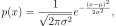
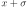
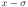
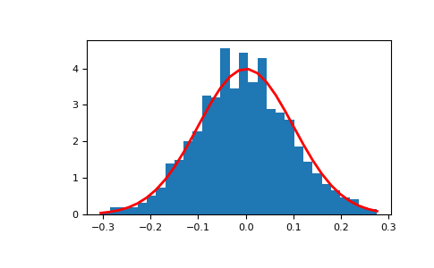

numpy.random.normal¶
-
numpy.random.normal(loc=0.0, scale=1.0, size=None)¶ Draw random samples from a normal (Gaussian) distribution.
The probability density function of the normal distribution, first derived by De Moivre and 200 years later by both Gauss and Laplace independently [2], is often called the bell curve because of its characteristic shape (see the example below).
The normal distributions occurs often in nature. For example, it describes the commonly occurring distribution of samples influenced by a large number of tiny, random disturbances, each with its own unique distribution [2].
Note
New code should use the
normalmethod of adefault_rng()instance instead; see random-quick-start.- Parameters
- locfloat or array_like of floats
Mean (“centre”) of the distribution.
- scalefloat or array_like of floats
Standard deviation (spread or “width”) of the distribution. Must be non-negative.
- sizeint or tuple of ints, optional
Output shape. If the given shape is, e.g.,
(m, n, k), thenm * n * ksamples are drawn. If size isNone(default), a single value is returned iflocandscaleare both scalars. Otherwise,np.broadcast(loc, scale).sizesamples are drawn.
- Returns
- outndarray or scalar
Drawn samples from the parameterized normal distribution.
See also
scipy.stats.normprobability density function, distribution or cumulative density function, etc.
Generator.normalwhich should be used for new code.
Notes
The probability density for the Gaussian distribution is

where
 is the mean and
is the mean and  the standard
deviation. The square of the standard deviation,
the standard
deviation. The square of the standard deviation,  ,
is called the variance.
,
is called the variance.The function has its peak at the mean, and its “spread” increases with the standard deviation (the function reaches 0.607 times its maximum at  and  [2]). This implies that normal is more likely to return samples lying close to the mean, rather than those far away.
References
- 1
Wikipedia, “Normal distribution”, https://en.wikipedia.org/wiki/Normal_distribution
- 2(1,2,3)
P. R. Peebles Jr., “Central Limit Theorem” in “Probability, Random Variables and Random Signal Principles”, 4th ed., 2001, pp. 51, 51, 125.
Examples
Draw samples from the distribution:
>>> mu, sigma = 0, 0.1 # mean and standard deviation >>> s = np.random.normal(mu, sigma, 1000)
Verify the mean and the variance:
>>> abs(mu - np.mean(s)) 0.0 # may vary
>>> abs(sigma - np.std(s, ddof=1)) 0.1 # may vary
Display the histogram of the samples, along with the probability density function:
>>> import matplotlib.pyplot as plt >>> count, bins, ignored = plt.hist(s, 30, density=True) >>> plt.plot(bins, 1/(sigma * np.sqrt(2 * np.pi)) * ... np.exp( - (bins - mu)**2 / (2 * sigma**2) ), ... linewidth=2, color='r') >>> plt.show()
Two-by-four array of samples from N(3, 6.25):
>>> np.random.normal(3, 2.5, size=(2, 4)) array([[-4.49401501, 4.00950034, -1.81814867, 7.29718677], # random [ 0.39924804, 4.68456316, 4.99394529, 4.84057254]]) # random